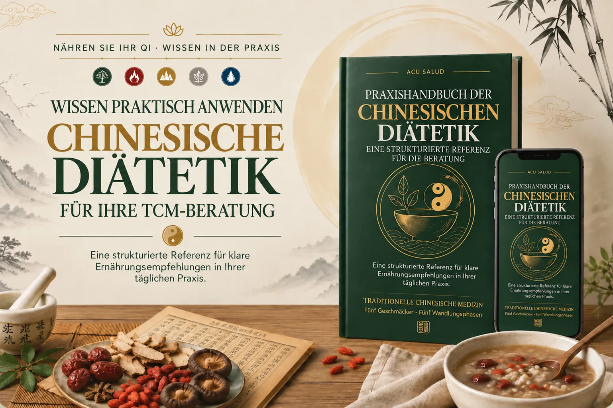

Finden Sie passende Lebensmittel und Empfehlungen für das energetische Muster Ihrer Patienten. Ein Praxishandbuch und 7 Bonus-PDFs helfen Ihnen, Empfehlungen klar zu strukturieren und die Ernährung nach der Traditionellen Chinesischen Medizin (TCM) in Ihre Beratung einzubeziehen.

SIE THEORETISCHES WISSEN IN KONKRETE ERNÄHRUNGSEMPFEHLUNGEN ÜBERTRAGEN MÖCHTEN.
Sie haben TCM studiert und suchen klare Orientierung, um Ihre Empfehlungen an das jeweilige energetische Muster anzupassen.
Sie möchten wissen, welche Lebensmittel bei den wichtigsten TCM-Mustern empfohlen, eingeschränkt oder vermieden werden können.
Sie möchten die Prinzipien der klassischen Lehren in einfache, umsetzbare Ernährungsempfehlungen übertragen.
Sie möchten Ihre Beratung vor Ort oder online durch einen strukturierten Ernährungsansatz ergänzen.
Sie möchten praktische Empfehlungen geben, die Gewohnheiten, Lebensumstände und energetisches Muster berücksichtigen.
Sie suchen Unterlagen, um Ihre Empfehlungen verständlich zu erklären und ihre Umsetzung zwischen den Terminen zu erleichtern.
Sie benötigen eine schnelle, übersichtliche Referenz, die Sie während der Beratung zur Hand haben.
Sie möchten die Ernährung in Ihre TCM-Praxis einbeziehen und Ihre Begleitung besser organisieren.
Die fünf Wandlungsphasen in der Beratung
Zang-Fu-Zuordnung: Leber und Gallenblase
Wählen Sie eine Wandlungsphase aus, um ihre Zuordnungen und Lebensmittelbeispiele nach der TCM zu entdecken.
Lebensmittel nach ihren fünf Temperaturwirkungen – kalt, kühl, neutral, warm und heiß – sowie ihren fünf Geschmäckern einordnen.
Die traditionellen Zusammenhänge zwischen Lebensmitteln, Wandlungsphasen und Zang-Fu-Funktionen verstehen.
Passende Lebensmittel für die im Handbuch behandelten energetischen Muster nachschlagen.
Lebensmittel erkennen, die je nach energetischem Muster und persönlichem Kontext eingeschränkt oder vermieden werden können.
Konkrete, realistische Ernährungsempfehlungen entwickeln, die sich im Alltag umsetzen lassen.
Ihre Empfehlungen mit einfachen Worten erklären, ohne Fachbegriffe anzuhäufen.
Chinesische Diätetik in Ihre Begleitung und Ihre Akupunkturpraxis einbeziehen.
Die Ernährung an Jahreszeiten, örtliches Klima und das individuelle energetische Muster anpassen.
Rezepte nach traditionellen Ausrichtungen nutzen: Qi, Blut, Yin, Yang und Feuchtigkeit.
Chinesische Diätetik als praktische Ergänzung in Ihren Beratungen einsetzen.
Von den Grundlagen bis zu kommentierten Fällen: eine strukturierte Referenz für die Chinesische Diätetik in Ihrem Praxisalltag.
Verstehen Sie die Prinzipien der Chinesischen Diätetik, Yin, Yang und Qi anhand von Tabellen und praktischen Beispielen.
Schlagen Sie die fünf Temperaturwirkungen, fünf Geschmäcker und traditionellen Zuordnungen für Ihre Lebensmittelauswahl nach.
Verknüpfen Sie Muster von Leere, Fülle, Hitze, Kälte oder Stagnation mit konkreten Ernährungsempfehlungen.
Nutzen Sie Rezepte, Menübeispiele und eine schrittweise Vorgehensweise für Ihre Empfehlungen.
Organisieren Sie Ihre tägliche Arbeit mit Referenzkarten, Vorlagen zur Verlaufskontrolle und 11 kommentierten Fällen.
16 Referenzkarten zu energetischen Mustern, Zungenbeobachtung, Temperaturwirkungen, Geschmäckern und passenden oder einzuschränkenden Lebensmitteln. Digital nutzen oder ausdrucken.
22 Rezepte mit Zutaten, Zubereitung und TCM-Hinweisen: Suppen, Brühen, Gerichte, Aufgüsse und Zwischenmahlzeiten, geordnet nach energetischer Ausrichtung.
Passende oder einzuschränkende Lebensmittel, Menüideen und Einkaufslisten für jede Jahreszeit. Mit Anpassungen an unterschiedliche Klimazonen und Hemisphären.
8 Vorlagen für Erstberatung, Verlaufskontrolle, Ernährungstagebuch, Zungenbeobachtung und den Ernährungsplan für Ihre Patienten. Zum Ausdrucken oder Anpassen.
6 Grundbrühen und 5 besondere Zubereitungen mit Varianten, einer Methode für schnelle Mahlzeiten und Hinweisen zur Aufbewahrung.
12 realistische, kommentierte Bildtafeln: Farbe, Form, Feuchtigkeit, Belag, Risse und Abdrücke. Jede Tafel erläutert ein mögliches energetisches Muster und Ernährungshinweise. Eine visuelle Beobachtungshilfe, die Sie mit dem gesamten TCM-Befund abgleichen.
Verstehen Sie, welche Kombinationen je nach energetischem Muster und traditionellen TCM-Prinzipien weniger geeignet sein können. Mit Alternativen, Beispielen und klarer Unterscheidung zwischen Tradition und wissenschaftlichen Erkenntnissen.
Erfahrungsberichte aus dem ursprünglichen Angebot. Individuelle Erfahrungen sind keine Garantie für Ergebnisse.
„Warme Mahlzeiten und Brühen haben meinen Alltag verändert. Nach zwei Wochen hatte sich meine Verdauung verbessert und ich hatte wieder mehr Energie.“
„Meine Magenschmerzen verschwanden, nachdem ich Milchprodukte und kalte Lebensmittel weggelassen hatte. Einfache Veränderungen haben für mich viel bewirkt.“
„Mit warmen Mahlzeiten bemerkte ich eine Verbesserung meiner Verdauung und meiner Schlafqualität.“
„Der saisonale Leitfaden half uns, unsere Mahlzeiten im Winter anzupassen. Die vorgeschlagenen Brühen und Aufgüsse sind sehr wohltuend.“
Nehmen Sie sich Zeit, das Handbuch und die 7 Bonus-PDFs anzusehen. Entspricht der Inhalt nicht Ihren Erwartungen, können Sie innerhalb von 7 Tagen eine Erstattung beantragen. Es gelten die beim Kauf angezeigten Hotmart-Bedingungen.
Für TCM-Praktizierende, Akupunkteure, Therapeuten, naturheilkundlich Tätige mit TCM-Interesse, Fachkräfte der integrativen Gesundheitsversorgung und Studierende, die praktische Orientierung für ihre Beratung suchen.
Die Grundlagen werden schrittweise erklärt und anschließend praktisch angewendet. TCM-Grundkenntnisse erleichtern den Umgang mit den energetischen Mustern. Das Handbuch dient als Nachschlagewerk und ersetzt keine berufliche Ausbildung.
Nach Bestätigung Ihrer Zahlung erhalten Sie per E-Mail die Zugangsinformationen zum Handbuch und den 7 digitalen Bonus-PDFs auf Deutsch.
Sie können die Dokumente herunterladen, behalten und beliebig oft nachschlagen. Es gibt kein Abonnement und keine wiederkehrenden Zahlungen.
Ja. Sie können die PDFs auf Smartphone, Tablet oder Computer lesen. Praktische Karten und Vorlagen können Sie auch ausdrucken.
Sie haben 7 Tage Zeit, die Inhalte kennenzulernen. Wenn das Praxiskit nicht Ihren Erwartungen entspricht, können Sie über Ihren Hotmart-Kauf eine Erstattung beantragen. Es gelten die beim Kauf angezeigten Bedingungen.
Bei Schwierigkeiten mit dem Zugang oder dem Herunterladen erhalten Sie technische Unterstützung per E-Mail.
Wir helfen TCM-Praktizierenden, ihr Wissen in der Beratung konkreter anzuwenden.
Mit strukturierten Materialien, Tabellen und praktischen Beispielen machen wir die Prinzipien der Traditionellen Chinesischen Medizin zugänglicher.
Unsere Nachschlagewerke helfen Ihnen, sicherer zu arbeiten, Ihre Überlegungen zu ordnen und Ihre Empfehlungen klar zu strukturieren.
Sie möchten die Chinesische Diätetik vertiefen und praktische Orientierung für Ihre Arbeit gewinnen? Dieses Handbuch und seine 7 Bonus-PDFs begleiten Sie dabei.
Zang-Fu-Zuordnung: Leber und Gallenblase
Wählen Sie eine Wandlungsphase aus, um ihre Zuordnungen und Lebensmittelbeispiele nach der TCM zu entdecken.
Zang-Fu-Zuordnung: Herz und Dünndarm
Wählen Sie eine Wandlungsphase aus, um ihre Zuordnungen und Lebensmittelbeispiele nach der TCM zu entdecken.
Zang-Fu-Zuordnung: Milz und Magen
Wählen Sie eine Wandlungsphase aus, um ihre Zuordnungen und Lebensmittelbeispiele nach der TCM zu entdecken.
Zang-Fu-Zuordnung: Lunge und Dickdarm
Wählen Sie eine Wandlungsphase aus, um ihre Zuordnungen und Lebensmittelbeispiele nach der TCM zu entdecken.
Zang-Fu-Zuordnung: Niere und Blase
Wählen Sie eine Wandlungsphase aus, um ihre Zuordnungen und Lebensmittelbeispiele nach der TCM zu entdecken.